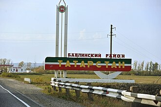

Мензели́нский район (тат. Минзәлә районы) — административно-территориальная единица и муниципальное образование (муниципальный район) в составе Республики Татарстан Российской Федерации. Находится на левом берегу Камы, в северо-восточной части Республики. Административный центр — Мензелинск. Изначально на месте района располагался форпост русских стрельцов. Современный район образован в 1930 году. Мензелинский район известен тем, что в годы Великой Отечественной войны здесь жил Герой Советского Союза поэт Муса Джалиль.
